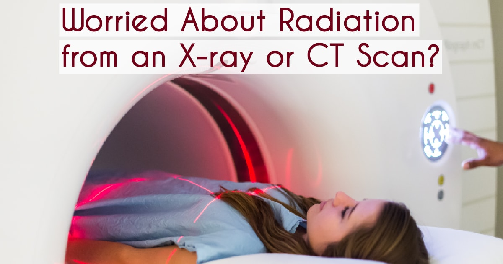

About me

Name: Mashal Ashfaque
CMS: 337203
Class: CS 10-A
Email: mashfaque.bscs20seecs@seecs.edu.pk
Institute: National University of Science and Technology
Computerized Tomography (CT) Scan
Introduction:
The Use of Computer technology in the field of medicine is vast, and the dependence on computational technology for medical purposes, diagnosis and even surgery is increasing day by day. One such example is that of Computerized Tomography Scan, or more commonly known as the CT scan, which has revolutionized modern day diagnosis and treatments.
Following article provides a brief discussion on the working of CT scanners, their significance and impact in the medical field and the recent advancements in the CT Technology.
- Why perform a CT Scan?
- How does a CT Scan work?
- What you should know before getting a CT scan?
- After the procedure
- What's next in the CT Technology?
A CT scan operates through computers and uses 3-Dimensional x-ray machines that undergo multiple rotations. Through rotations, cross-sectional images of the body are created which are much more detailed and informative as compared to the ordinary x-ray machines. These images can display bones, soft tissues and even up to the vascular system (blood vessels) in various body parts, which include:
- Knees
- Chest
- Shoulders
- Skull (Head)
- Spine (Back)
- Heart
- Abdomen
Why perform a CT scan?
There are numerous reasons for which a CT Scan is used. Its primary use is in diagnosis of diseases and it aids the medical experts in the evaluation of injuries etc. CT Scan is basically an imaging technique used by doctors and paramedics for diagnosing infections, muscle and bone disorders, finding the exact location of tumors, both benign and malignant(cancerous). CT scan is also used to examine blood vessels and other internal structures in the body, and also to study the intensity of an injury or extent to which an injury, tumor, or infection is spread.
Apart from Diagnosis, a CT scan is also used in treatments such as it may help guiding the procedures, to be opted by the doctors accordingly, such as surgeries or biopsies. It is also used to assess the extent of effectiveness of treatments for cancer, heart diseases and various medical conditions.Go back.
How does a CT Scan work, and how are computers involved?
The CT computers construct an image of the patient by using extremely sophisticated mathematical techniques. A CT scan is different from the conventional x-ray in this regard that it does not use a fixed x-ray tube. Instead, it consists of a motorized radiation source that rotates around the circular opening of the gantry , which is a donut-shaped structure. The patient undergoing the procedure is made to lie on a bed, that moves through the gantry at a low pace. Meanwhile, the motorized x-ray tube rotates around the body and shoots narrow x-ray beams. There are special x-ray detectors which are placed exactly opposite to the x-ray source so that as the rays pass through the patient’s body, they’re picked up by the detectors which then transmit the data to the computers. After every one complete rotation, the computer constructs a 2 dimensional image slice. Just as one complete slice has been constructed, the computer stores the image and the motorized bed moves forward through the gantry, and the same process is repeated, and another image slice is collected, and the procedure continues until desired number of slices are obtained.
The next step is to convert the data into a form that a human eye can comprehend and understand. Thus the image slices obtained can be viewed individually, and can also be stacked together by the computer to form a 3 dimensional image. This image contains the skeleton, organs and tissues, as well as the abnormality which was the objective to be located and identified. This is a very advantageous technique, as the medical expert can 3 dimensionally rotate the image, or view the slices in succession, which makes it easier to locate where exactly the problem lies.Go back.
How does a CT Work? Video by © National Institute of Biomedical Imaging and BioEngineering
What is a CT scan with Contrast?
Structures like bones are comparatively dense, and easier to examine through a CT scan. On the other hand, soft tissues are not too visible, and show up faint or blurred in the image. For this, a special dye may be used to make them more appear more clearly. This dye is called “Contrast material”. Go back..
Different methods of administering contrast agents:
The contrast agents are most commonly made up of iodine or barium sulfate. These drugs may be administered to the patient in one of the following ways:
| Medium | Explanation | Body parts to be enhanced |
|---|---|---|
| Injection | The drug is injected directly into the vein | Digestive tract (the food pathway in the body) |
| Orally | Patient drinks a liquid that contains the contrast material. | Patient drinks a liquid that contains the contrast material. |
| Enema | The contrast material is inserted into the rectum. | Intestines |
What you should know before getting a CT scan
Are there any risks ?
In the Computerized Tomography test, there is involvement of x-rays in the procedure, thus it comes with certain risks. The ionizing radiations produced by x-rays can potentially affect the living tissue. This is a risk which depends on the number of times an individual is exposed to these rays but apart from that, the chances of developing cancerous tumors due to this exposure to radiations are very less.
Other risks may vary person to person, such as some patients may experience an allergic reaction to the contrast agents used in CT Scan. (These are certain Iodine-based contrast agents that are injected to veins for enhancement of images captured through x-ray and CT scans.) Mostly, the reaction is mild, such as irritation, itching or a rash. And in some cases, the Iodine-based agents may even cause temporary kidney failure, although this happens in very rare cases.
Therefore, before going for a CT scan, it is extremely important for you to share your medical history with the doctor, such as if you’re pregnant, because then you might be suggested other options like MRI or Ultrasounds, although CT scan poses no known threats to the baby, and also if you’ve had adverse reactions to Iodine in the past or if you went through a kidney malfunctioning in the past, because to such patients, doctors do not administer contrast agents as they may further cause complications, such as inducing permanent reduction in kidney function. So it is essential to notify your doctor as he may give you medication for allergy or steroid to counteract any side effects that iodine-based contrast may pose a risk of. Moreover, the doctor also needs to know if you are a diabetes patient and are taking metformin, so they should tell you if you need to quit taking the medication pre or post treatment. Go back.
How Long does it take?
The procedure of getting a CT scan is generally very minimally invasive, and the patient gets done with it in no time as it’s a quick procedure. This test can be as long as 10 to 30 minutes, as it depends on the part of body which is being scanned. Another added factor is also that whether contrast dye is used or not, because getting the patient into the right position and giving the contrast agent takes longer than the process of capturing images. After the scanning is complete, patient is asked to wait while the doctors check the pictures to ensure their clarity and if they are showing all of the body part or not. In the latter case, more pictures may be requiredGo back.
Done with the Scan,what to expect next?
In case the patient went through a CT with contrast, he or she would be kept under observation for some time to monitor any side effects or allergic reactions to the contrast dye.
These side effects may include:
- Itching
- Rash
- Difficulty in breathing
- Swelling of face, that may last up to an hour
- Nausea
- Wheezing
After the CT scan, patient is instructed to drink lots of water so that the contrast material may empty out from the kidneys, to avoid any kidney complications.
If patient notices any pain or redness at the area, he should immediately notify the doctor because this may be an indication of an infection. If the contrast agent was administered orally, patient may experience Diarrhea.
Depending on each patient’s particular condition, doctor may advise certain additional instructions, but other than that there is no special type of care required after a CT scanning of chest. The patient can continue with his or her regular diet and day-to-day activities unless advised differently by the physician.Go back.
.jpg)
What's next in the CT Technology?
Many advancements are being made in the CT technology that would not only help in reducing the dose, but also improve image quality and generally speed up the whole process.
Higher Slice Systems:
About a decade ago, 64-slice CT scanning systems were introduced. They were an upgradation to the older 16-slice systems. They were widely purchased and soon became the new standard of care. After the 64 slice systems were introduced, the higher slice systems not only improved image quality, but the scanning time period was also reduced. One major benefit of higher slice systems is also that they ensure
For more information on higher slice systems, please visit : 64 Slice, 256 Slice or 320 Slice CT System?
Go back.
Cardiac and Respiratory freeze: In simpler words, this means that if the area to be examined is heart or the chest area, then their maybe some movement in the patient’s body. These chest movements are caused by breathing, while the heart is also obviously pumping blood continuously. These movements are a hindrance to constructing clear and precise images. This is where the higher slice systems come into the scene. The scanning by 80, 128, 256,320 and 640 slice systems is completed in milliseconds.
New Detector Technology
In the recent years, several manufacturing companies like Philips, Toshiba, Siemens and GE Healthcare introduced Computerized Tomography systems with new detector technology which include the use microelectronic circuits. This technology helps in reducing the electronic and machinery noise, and also enables much sharper images.
Go back.
Cardiac Imaging Advances:
One of the top emergency departments according to the latest stats is chest pain, and for patients of chest pain, CT is the most cost-effective option. CT Angiography allows more rapid discharge of patients who do not have any coronary issues, and eliminates a large portion of other diagnostic catheterizations and also reduce the need of nuclear perfusion scans. Thus CTA is being used as the primary test for chest pains as it can immediately show any ischemia that may be causing any blockage, and the calcium score identifies the patients with or without any coronary disease. In earlier times CT Angiography did not provide functional quantification as to blood flow and perfusion. Recently, two new technologies, CT perfusion imaging and fractional flow reserve CT (FFR-CT) are also gaining recognition in terms of assisting in functional assessments. These CT perfusion software being offered by all major manufacturing companies track the concentrations of Iodine-based contrast material in the myocardium throughout the circulatory cycle. The areas where there is low contrast correspond with the areas of perfusion defects.Go back.
Iterative Image Reconstruction
With the rapid advancements in computing power and a reduction in costs, almost all major CT manufacturers are now offering iterative image reconstruction instead of the former reconstructed images based on filtered back projection. This updated software basically revises the image repeatedly with multiple iterations to clean out artifacts and induce image clarity pixel by pixel. As a result, diagnostic image clarity on low dose scans which was not possible before is now enabled.Go back.
Spectral CT Imaging
Spectral Computed Tomography, also known as dual-source or dual-energy CT can potentially become a fast growing trend in near future, since many major companies are now integrating this feature into their CT scanners. The concept of Spectral CT Imaging is similar to that of a prism in such a way that just like a prism splits visible light into a spectrum of its parent chemical elements for analysis, the spectral CT breaks down the X-Ray photons by chemical elements. This phenomenon is based upon viewing the same anatomy at two different kV energies, which is achieved by using a dual source CT scanner, or any other newer means that involve the use of either fast kV switching in between various energies during the scanning, or some detector elements that may record different kV levels during a scan.Go back.
Related Articles
For more information on CT Scanners, and latest advancements in the CT Technologies, visit: